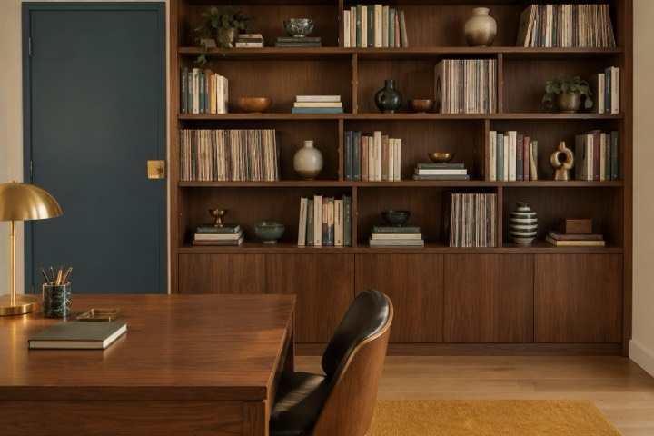
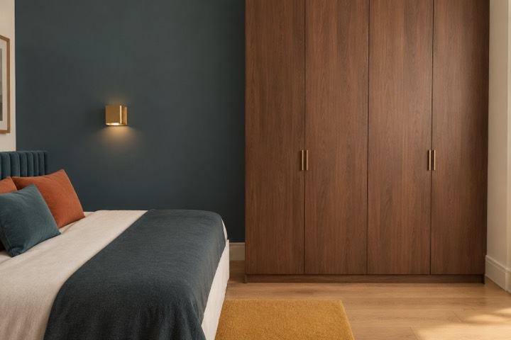

Визуализации
Как это выглядит




Кадры построены по чертежам этого проекта; в альбоме для заказчика каждый стоит на листе развёртки своей стены.
Две смежные квартиры с общим тамбуром становятся одной: гостиная-столовая с балконом, кабинет-библиотека, мастер-спальня с ванной. Стиль — середина века и ар-деко.
Проём в межквартирной стене и один вход из тамбура. Несущие колонны и ригель не трогаем; нужны план БТИ и техзаключение — пункт стоит в реестре открытых вопросов.
Санузлы и кухня остались там, где они по обмеру; кухня — у газовой трубы.
Подоконники по обмеру — 720…825 мм от пола, поэтому остекление принято многослойным безопасным.
Середина века на 65 % и ар-деко на 35 %: орех и тик, латунь, изумрудный бархат, горчичное букле, терраццо. Коды цвета — только проверенные.
Кресло-лаунж с оттоманкой, мраморный стол-тюльпан, журнальный стол Noguchi, кресло-яйцо, буфет на конических ножках, стеллаж-библиотека из ореха, кровать ар-деко в изумрудном бархате. Модели уточняются с заказчиком.
Вид сверху 3D и 25 кадров стен и обзоров. Каждый сверен с макетом: 12 переснято — стеллаж принимали за стену, на пустых стенах появлялись картины. Мелкие отличия, которые остались, записаны при приёмке.
Нажмите на лист — он откроется крупно, и к нему можно оставить правку голосом. Так же будет с вашим проектом.


Кадры построены по чертежам этого проекта; в альбоме для заказчика каждый стоит на листе развёртки своей стены.
Эти пункты стоят в реестре открытых вопросов альбома; пока они не закрыты, листы помечены «предварительно».
Не верьте на слово даже нам: рядом таблица, где то же самое разложено против планировщиков, студий и бюро. А бриф займёт около 10 минут, когда решите.
Автор проекта — дизайнер-архитектор Кырлан Александр. Его подпись и контакты стоят в основной надписи каждого листа.